{kind=link}
 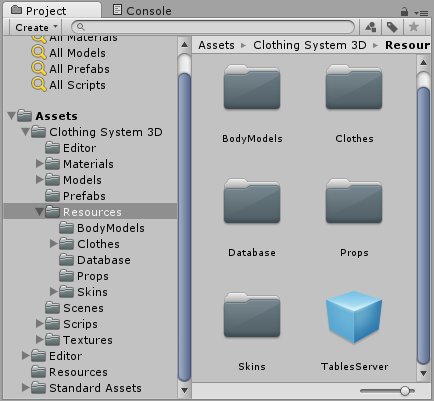
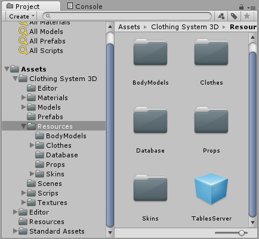Version 1.0
Need a way to allow the player to customize the appearance, like clothes, skins and races, in you Unity's RPG game? This asset can help you to do it.
2016 - Larissa Redeker
Important: This project requires a good level of knowledge in 3D modeling, because it demands the correct setup of the models that will be used.
The 3D modeling software used is Blender, but the models can be made in any 3D software. All models are in FBX format, and the blender sources files can be found in the zip file.
The system was made with Unity 5.3.5f1, and the language used is C#.
All the source code is provided in the project, no external DLLs or thirdy-part code was used.
Some models where provided as example of how to use the system. They have some differences to show how much the models can be customized. The models are: Human (female and male), Horse (normal and skeleton) and a chibi (no gender or variations). Human and Chibi also have clothes, props and skins (chibi doesn't have skins).
To allow the system to work, the Player object, or another one that will use the system, need to have the following structure:
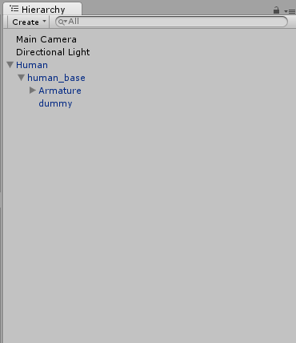
The root object is an empty object, and holds the ActorScript script, as well any other controls scripts and the Animator component.
Inside this object you need to have the "base actor model", this one is simply an object with the skeleton and a skinned mesh renderer from where the ActorScript will get the bones structure that it need to work (in the example above, the "dummy" object). To avoid the skinned mesh renderer, that can be a simple quad linked to the bones, to appear remove the Mesh property. It doesn't needed to get the bones structure, only the skinned mesh render itself.
The body of the actor, with clothes and props, will be added at runtime as a child of the root object, and will use the bone structure from the base actor model.
To make the animations works, each body models needs to copy the avatar definition from the base actor body, and the Animator of the actor need to have its Avatar property set to the avatar of the base actor body. You can use only the same skeleton in each body model. If you have an human actor, that have different bodies for male and female, each body need to use the same skeleton used in the base model, or the animations will not work.
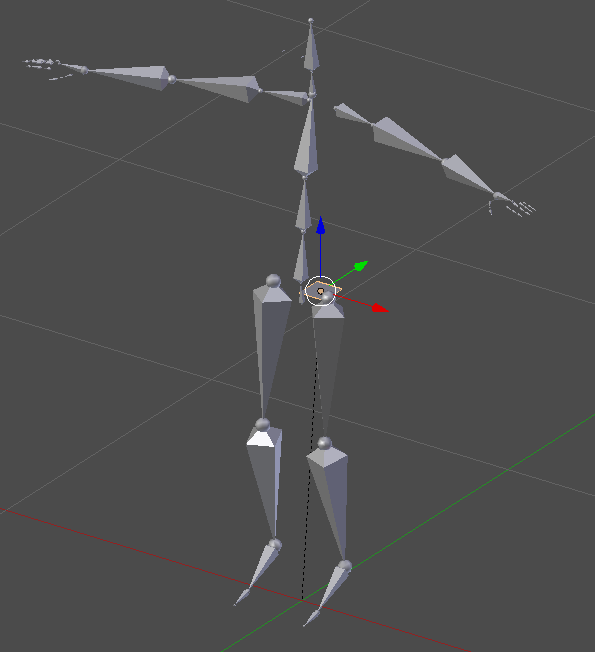
The base actor model. This model has only the bones structure (Armature) and a simple model attached to it called Dummy. This is from where the system will get information about the bone structure.
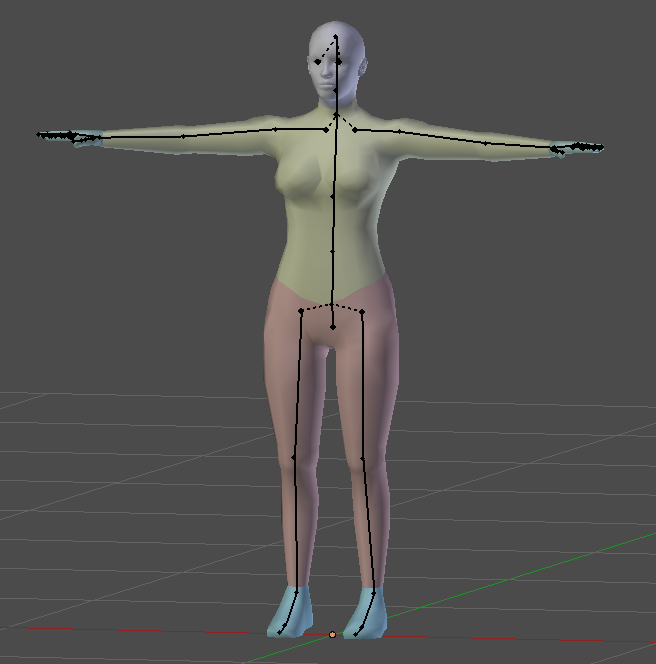
The female body. It has the exactly same skeleton (armature) as the base model. The body was separated into parts (colored ones): head, upper_body, lower_body, hands and feet (eyes and ears are separated objects too).
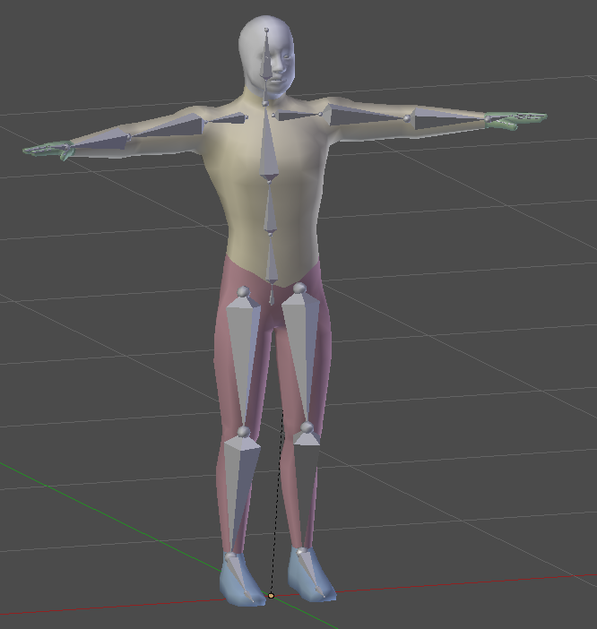
The male body model. Same as the female body
We will see how to create the models, import them on unity and set the prefabs in the next chapters.
This chapter will show every item of the system database in details, including the classes they use.
The architecture used in this system allows you to use the way you want to store the data. The classes that stores and controls the tables (records of objects) uses a class called Recordset. This Recordset class is responsible for saving and retrieving the data, it uses generics to receive and return lists of any type. The system is using by default XML files. You can write your own Recordset class to save and restore data.
The system uses namespaces to separate classes. The Recordset class that uses XML belongs to the ClothingSystemDBXML namespace. If there is a Recordset that use JSON, it will belong to ClothingSystemDBJSON, for example. This will allow you to used as many versions of the Recordset as you want, to test different forms of storing data.
But how the table classes know which one to use? Through the following declaration in the beginning:
using DBAccess = ClothingSystemDBXML;
Then you only need to use the following line to declare the access to the Recordset class:
DBAccess.Recordset recordset = new DBAccess.Recordset();
You will need to change only the using declaration for each table class in order to use the Recordset you want. The rest remains the same.
And the declaration of methods in the Recordset class need to follow the same form:
using UnityEngine;
using System.Collections.Generic;
using ClothingSystem3D;
namespace ClothingSystemDBXML{ //the name of the workspace you want your class belongs to
public class Recordset {
CSConfig _config = new CSConfig();
//** GetRecordset **
public List GetRecordset (string tableName){
List toReturn = new List ();
[ your code here]
return toReturn;
}
//** SaveRecordset **
public void SaveRecordset(List recToSave, string tableName){
[your code here]
}
}
}
The classes of the tables can be found in the folder Scripts/Tables. All the classes have comments for each method.
The system is atoring the dabatase in the Database folder, set in Configurations. To start with an empty database, you can simply delete the XML files in this folder.
To edit the content of the database, the system have editor windows built for each table. To access them use the Clothing System 3D menu in the editor.
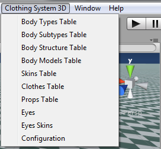
Set the folders where each object type will be stored.
All the folders need to be properly set to allow the system to work. And all the folders set in the fields need to exist inside the Resources folder.
The FolderPrefix field is used when the system is under another folder than the Assets root.
The configurations XML file nned to stored in the CSConfig.xml file in the Resources folder at root (not in the Resources folder inside the system folder).
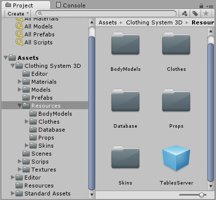
Class: CSConfig
Is the type of body used by an actor, it can be seen as Race. Example: human, horse, dragon.
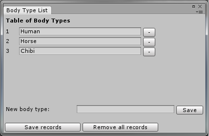
Class: BodyTypeTable
Used when there is differences with gender in the body, like males and females of the human body. This table is necessary, if your model doesn't have gender differences, make a record called "genderless" or something you like. The Chibi is an example.
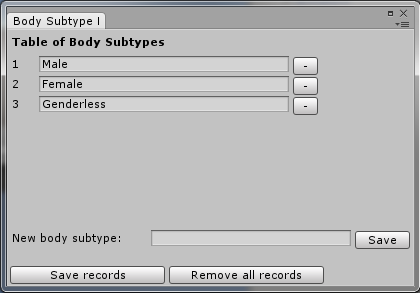
Class: BodySubtypeTable
Here you say to the system whats parts the actor body have, where the clothes and props can be added, where skins can be applied. The body structure belongs to one Body Type, and have available Body Subtypes.
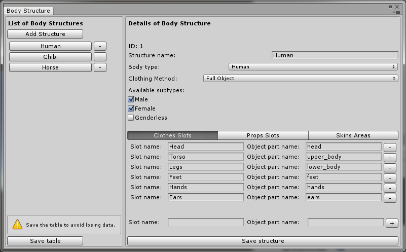
The cloth slots is where you can put clothes in the actor. Look at the graphic below. Each of these parts will be replaced with the cloth in two different ways:
- Full Object: the part will be hidden and the cloth prefab added to occupy its position. The clot prefab can be made for one or more objects.
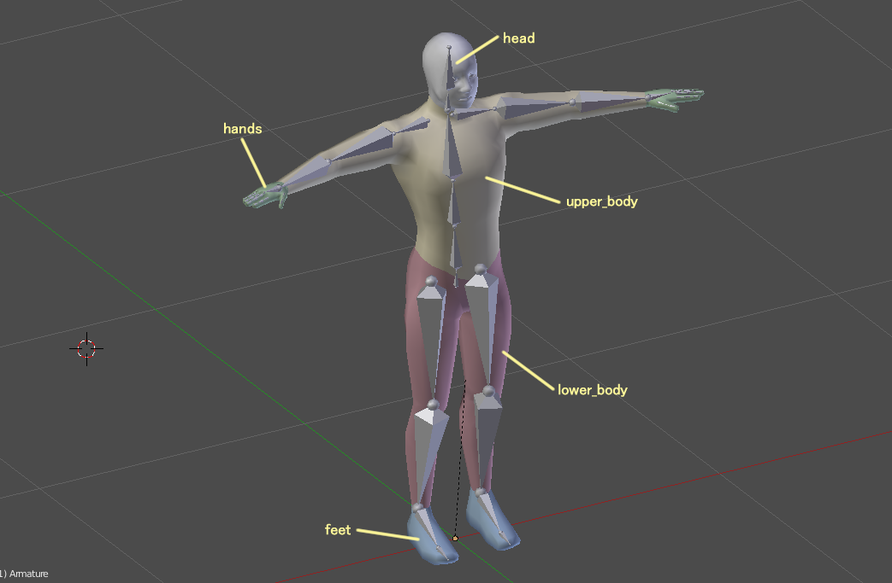
Each part of the body is divided in separate objects.
- Mesh Substitution: the cloth prefab can have only one object, because the system will transfer the mesh from the prefab to the object that hold the slot.
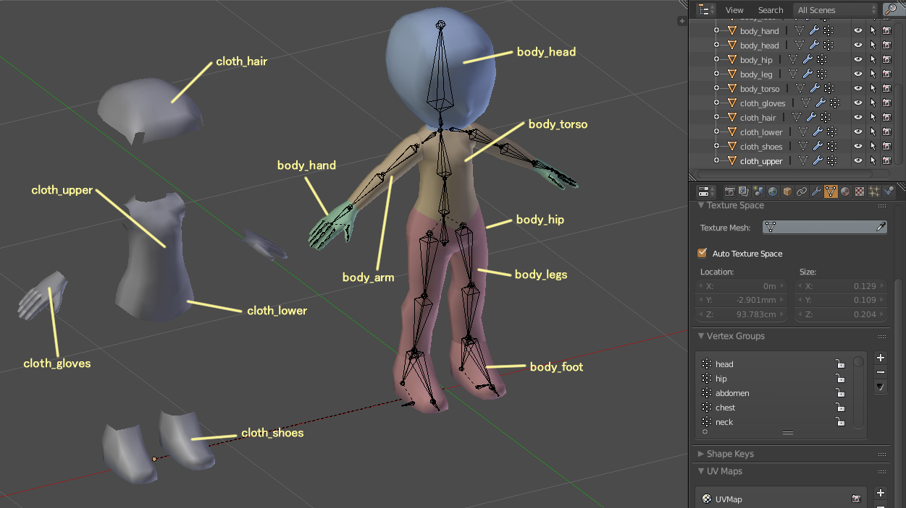
The model need to have objects that will hold the cloth mesh. In the picture above, these objects are in the left (they have been only moved to the left for clarify, but they occupy the exactly same places of the body parts. Check the source file), and the body parts in the right. In this model the body parts aren't hidden to add the prefab. They are still visible while the slot objects receive the mesh.
The prop slots use the bones of the skeleton to identify where a prop goes.
The skins slots identify the objects where the skin material can be applied.
Class: BodyStructureTable
After setting the body structure, you need to specify the prefabs that hold the body meshes for each body subtype available in the body structure.
Those models are only the SkinnedMeshRenderers object that compose the body, without the skeleton. If the model has a skeleton, the animations will not work.
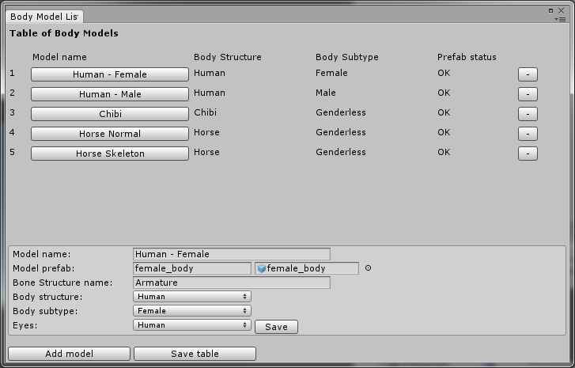
Class: BodyModelTable
This table is a list off all clothes available. The prefabs (meshes) need to be set for each body subtype available for the cloth. Most of RPG games have two versions of the same cloth, the female and the male. Here the system mimics this structure. When you change the model of the player, from male to female, for example, the system will try to swap the models of the cloth, to match the new body model. Even if the model is the same for all the genders, you need to specify it for each gender (like the Panda and Mummy in the example).
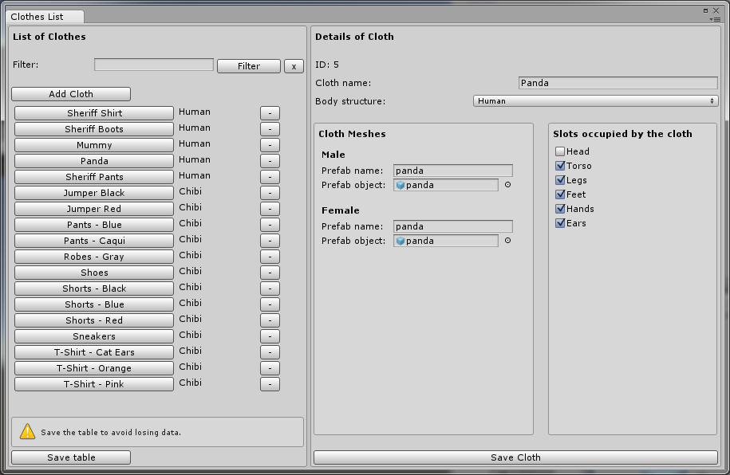
You need to tell to system what slots the cloth will occupy. For example, the Sheriff Shirt occupy only the torso of the body. The Panda is a full body model, so you need to check all slots that it will cover.
Class: ClothTable
This table is a list of props available (models that isn't controlled by bones). Props uses only one slot.

Class: PropTable
Once eyes have a different way to apply textures, it is considered a different object than the rest of the body model. In the Eye record you set what objects are the components of the eyes. With this, a model can have any number of eyes, or none.

Class: EyesTable
The materials for eyes are different from the textures for body, and are applied for each eye object. Using material, instead a plain texture file, allows you to use any shader you want as a skin.
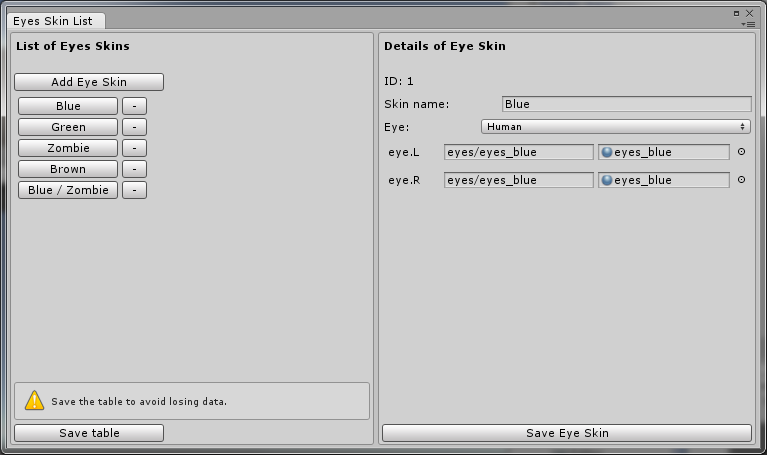
Class: EyeSkinTable
This table stores the materials used as body skins. Using material, instead a plain texture file, allows you to use any shader you want as a skin.
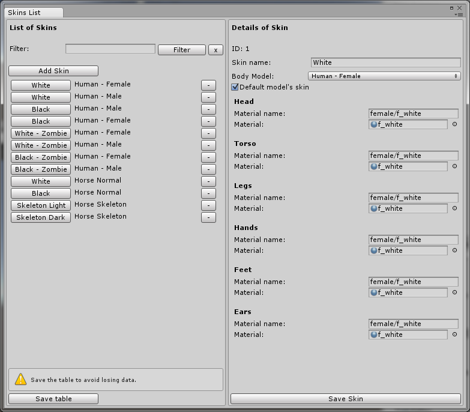
Class: SkinsTable
The actor script is responsible for the full customization of the actor body. It have methods to set a new body model, apply and remove clothes and props, apply body and eye skins. This script need to be attached to each player / actor object, in the root object.
The only two properties that need to be set are:
- Bones source: the "dummy" object in the base body model;
- AutoChangeCloth: if is true, the system will try to change the cloth prefabs when the body model changes.
The ActorScript.cs is found in the folder Scripts/ActorScripts.
There is some guidelines that need to be followed to create the models.
Clothes: for the full object method and the cloth will substitute a body part, if the cloth leave a part of the body uncovered, like a T-Shirt with short sleeves, you need to add the arms to the cloth. The Female Sheriff Shirt and the Female Sheriff Pants (Skirt) are the examples. The name of these body parts need to remain the same as used in the body model and in the body skin slots, to allow the system to update the skin of these parts.
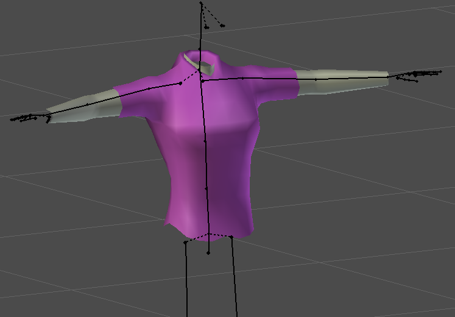
The shirt with the visible portion of the arms and neck.
Props: doesn't have influence of the bones, and they don't substitute any part. Once they are only added to a bone as a child, you can make them the way you want.
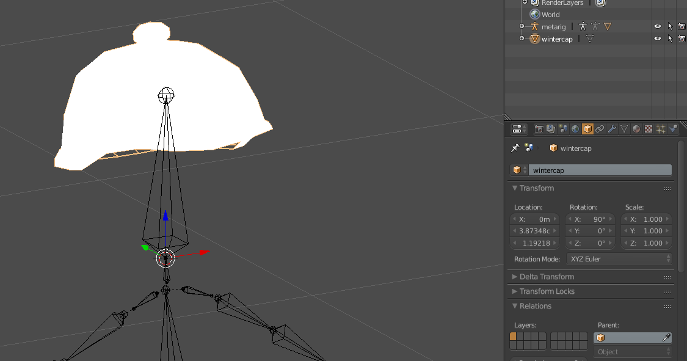
The chibi's wintercap. Notice the point of origin in the origin of the head bone.
Hair: Short hair don't need to have bone control, so can be a prop and added to the head bone. Long hair need to follow the movement of the neck and, depending of the length, the movement of the torso, so the best option if to make it as a cloth and create a cloth slot named hair (both in the 3d model and in the body structure record). But you can create your own hair system (this is a milestone for future versions of this system.)
When creating the models that are controlled by bones, put the center of origin of all in the same place. The best place is in the position 0,0,0, or the ground between the feet in the human model. It will ensure that all models will be put in correct places.
For props, the center of origin need to match the origin of the bone, because this is the position that will be automatically used when parenting the models.
Pay attention to the scale of the bones structure. It need to be 1, set in the modeling software, for all the models that use it, or you can get something like this:
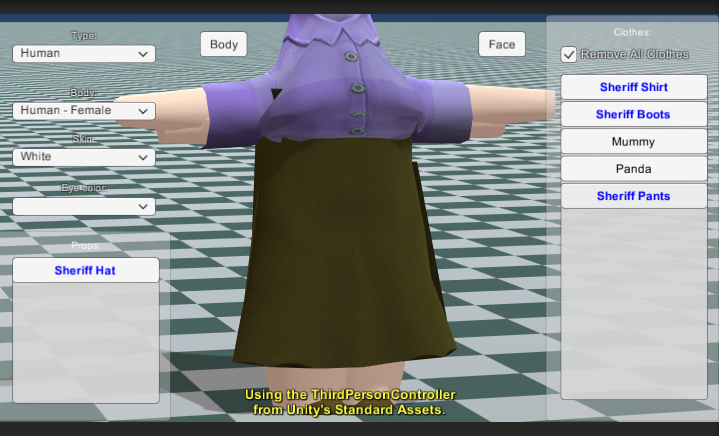
First, import the base model, the one with the bones structure (skeleton) and the dummy. Set the Animation Type to Humanoid or Generic. Set the Avatar Definition to Create From This Model.
Create an empty object in the scene, this one will be the Actor Object. Add the script ActorScript. Add the base model you have imported as a child of the Actor Object. Remove the Animator from the base model if exists.
For the body models, import the model. Drop it in the scene. Remove the skeleton and save it as a prefab in the Body Models folder you have set in the Configuration. Create a record for this model in the Body Models table. If the model has eyes, create a record for them in the Eyes table.
If you are using the Mesh Substitution method, remove the Mesh from the SkinnedMeshRenderer. It will "hide" the object while it isn't in use.
- If using the Full Object method:
Drop the cloth model in the scene. Make sure that the any body parts have the same name as noted in the Skins Slots in the Body Structure. Delete the Skeleton (Bones structure). Check if the materials are ok. Save the model as a prefab in the Clothes folder.
As example, refer to the Sheriff clothes or Panda.
- If using Mesh Substitution method:
Drop the model in the scene. For tis method you need to have only the object with the mesh that will be used. Un-parent the mesh's object and delete the rest. Save the object as a prefab in the Clothes folder. The clothes of the Chibi were made using this method.
After creating the prefab, create a record for the cloth in the Clothes table.
To have variations of the same cloth, like a blue shirt and a green shirt, create one prefab for each model, setting the appropriate materials for each one (skins for body part don't need to be set in the prefab, the system will set then automatically when the cloth is added to actor). Create a record for each variation.
The Shorts, Pants and Jumper of the Chibi are examples. The three variations of the short have their own prefabs, with the textures sets, and a record in the Clothes table.
Just drop the model in the scene, set the textures and save the prefab. Once the prop doesn't use a bone structure, there is nothing to delete. Save the prefab in the Props folder and create the record in the Props table.
The skins are materials. So, create the materials to be used and save them in the Skins Folder. Create the records in the tables.
In the video presentation of the System you can see it working with the Third Person Controller from Unity's Standard Assets. To use the system with this controller the steps are very simple:
- Drag the Third Person Controller to the scene
- Remove all the children objects
- Add your base model object (the one with the skeleton and "dummy")
- Add the ActorScript to the Controller and set the Bones Source to the "dummy"
- Change the Avatar of the Animator to the one created for the base model.
- In a script, use the method ApplyModelModel passing the ID of the body model you want to use. Run the scene. When your script runs, the ActorScript will automatically add the body model to the controller.
The system comes with a sample scene, where you can choose the model, the body, body and eye skins, and put props and change clothes.
The scene, caled setup, can be found in the Scenes folder. It uses the script setup_scene (found in Scripts folder to fill the controls and send the commands to the ActorScript of the selected model to made the changes.
This is the first version of the system.
Future versions will include more methods of database storage and a an object specific to hair.
To stay tunned about the updates, sign our newsletter in our website.
For more information on how the Mesh Substitution method works, check the free tutorial on the matter:
- Youtube video: https://www.youtube.com/watch?v=Ch1aJljEYp4
- Full text tutorial and files: http://www.keawstudio.com/tutorials/item/21-3d-character-customization-in-unity
This free tutorial doesn't cover the Full Object method, that was created for this asset.